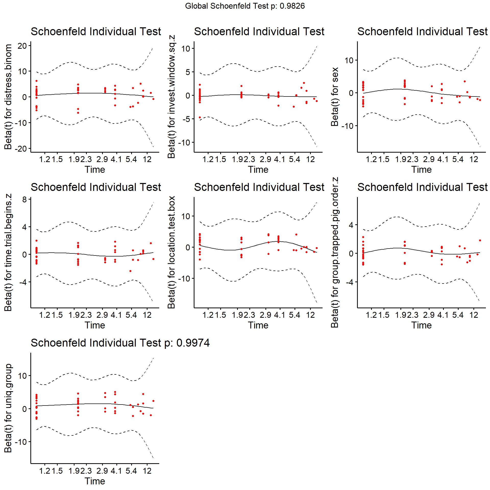
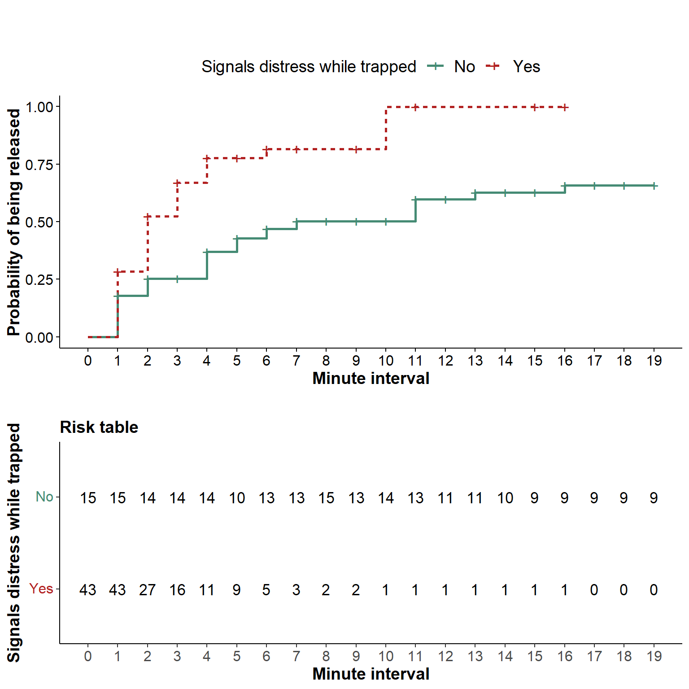

library(tidyverse) # tidy universe
library(fastDummies) # create dummy coded factors
library(survival) # create survival object and survival curves
library(survminer) # model diagnostics
library(lmtest) # lrtest() model comparisonProbability to be helped over time
Libraries
set.seed(1989)Data
Using survival analysis to analyse time to open door of trapped pigs. Data set contains time-resolved data of 58 trapped pigs.
Read data
dat <- read_csv("../data/survival-distress.csv")Rows: 345 Columns: 36
── Column specification ────────────────────────────────────────────────────────
Delimiter: ","
chr (9): trapped.pig.uniq.id, sex, location.test.box, next.min.status, outc...
dbl (27): sow, group.trapped.pig.order, interval_count, interval.dur, number...
ℹ Use `spec()` to retrieve the full column specification for this data.
ℹ Specify the column types or set `show_col_types = FALSE` to quiet this message.Adjust data types
dat <- dat %>%
# make factors
mutate_at(vars(distress.binom,
sex,
location.test.box,
uniq.group,
trapped.pig.uniq.id), ~as.factor(.)) %>%
mutate(invest.window.sq.z = as.vector(scale(sqrt(invest.window)))) %>%
mutate(time.trial.begins.z = as.vector(scale(time.trial.begins))) %>%
mutate(group.trapped.pig.order.z = as.vector(scale(group.trapped.pig.order)))
str(dat)tibble [345 × 36] (S3: tbl_df/tbl/data.frame)
$ trapped.pig.uniq.id : Factor w/ 58 levels "DG2_F_2","DG2_F_3",..: 1 1 1 1 1 1 1 1 1 1 ...
$ sow : num [1:345] 6232 6232 6232 6232 6232 ...
$ sex : Factor w/ 2 levels "Female","Male": 1 1 1 1 1 1 1 1 1 1 ...
$ group.trapped.pig.order : num [1:345] 3 3 3 3 3 3 3 3 3 3 ...
$ location.test.box : Factor w/ 2 levels "Front","Side": 1 1 1 1 1 1 1 1 1 1 ...
$ interval_count : num [1:345] 1 2 3 4 5 6 7 8 9 10 ...
$ interval.dur : num [1:345] 60 60 60 60 60 60 60 60 60 60 ...
$ number.of.intervals : num [1:345] 12 12 12 12 12 12 12 12 12 12 ...
$ next.min.status : chr [1:345] "trapped" "trapped" "trapped" "trapped" ...
$ screams.binom : num [1:345] 0 0 0 0 0 0 0 0 0 0 ...
$ escape.binom : num [1:345] 0 0 0 0 0 0 0 0 0 0 ...
$ door.binom : num [1:345] 0 1 0 0 1 0 0 0 0 0 ...
$ window.binom : num [1:345] 1 1 0 0 1 1 0 0 0 0 ...
$ screams : num [1:345] 0 0 0 0 0 0 0 0 0 0 ...
$ escapes : num [1:345] 0 0 0 0 0 0 0 0 0 0 ...
$ invest.door : num [1:345] 0 2 0 0 1 0 0 0 0 0 ...
$ invest.window : num [1:345] 4 5 0 0 1 1 0 0 0 0 ...
$ outcome1 : chr [1:345] "Helped" "Helped" "Helped" "Helped" ...
$ outcome2 : chr [1:345] "Full_trial" "Full_trial" "Full_trial" "Full_trial" ...
$ lat.helped.min : num [1:345] 11.6 11.6 11.6 11.6 11.6 ...
$ trapped.date : chr [1:345] "08.09.20" "08.09.20" "08.09.20" "08.09.20" ...
$ uniq.group : Factor w/ 8 levels "Batch1_A","Batch1_B",..: 1 1 1 1 1 1 1 1 1 1 ...
$ time.trial.begins : num [1:345] 12.5 12.5 12.5 12.5 12.5 ...
$ change.cort : num [1:345] NA NA NA NA NA NA NA NA NA NA ...
$ time.post.sample : num [1:345] NA NA NA NA NA NA NA NA NA NA ...
$ interval_time : chr [1:345] "56.92-116.92" "116.92-176.92" "176.92-236.92" "236.92-296.92" ...
$ stremodo : num [1:345] 0 0 1 0 0 0 1 1 1 4 ...
$ distress.num : num [1:345] 0 0 0 0 0 0 0 0 0 0 ...
$ distress.binom : Factor w/ 2 levels "0","1": 1 1 1 1 1 1 1 1 1 1 ...
$ distress.wstrem.num : num [1:345] 0 0 1 0 0 0 1 1 1 4 ...
$ distress.wstrem.binom : num [1:345] 0 0 1 0 0 0 1 1 1 1 ...
$ invest.window.sq.z : num [1:345] 1.0475 1.2999 -1.0901 -1.0901 -0.0213 ...
$ time.trial.begins.z : num [1:345] 0.426 0.426 0.426 0.426 0.426 ...
$ group.trapped.pig.order.z: num [1:345] -0.572 -0.572 -0.572 -0.572 -0.572 ...
$ tstop : num [1:345] 1 2 3 4 5 6 7 8 9 10 ...
$ tstart : num [1:345] 0 1 2 3 4 5 6 7 8 9 ...Define survival object
- create
tstartandtstopcolumns to define a time-varying survival object
dat <- dat %>%
group_by(trapped.pig.uniq.id) %>%
mutate(tstop = interval_count) %>%
mutate(tstart = interval_count-1) %>%
ungroup()- maximum duration of the tests was 20 minutes, i.e. if time to release trapped pigs
lat.helped.min= 20 (or the aborted trial) we have right censored data - create
eventcolumn,event = 1iflat.helped.min< 20 (pigs were helped within the test period), all others haveevent = 0, i.e. those were not helped within the test period.
dat <- dat %>%
mutate(event = 0L) %>%
group_by(trapped.pig.uniq.id) %>%
# last obs for each pig = 1
mutate(event = case_when(outcome2 == "Full_trial" &
lat.helped.min < 20 ~
replace(event,n(), 1L),
TRUE ~ 0L)) %>%
ungroup() %>%
arrange(trapped.pig.uniq.id)- check correct definition of the survival object using
survival::Surv(), a"+"indicates right censoring (i.e., not helped within 20 minutes or aborted trial).
with(dat, survival::Surv(tstart, tstop, event)) [1] ( 0, 1+] ( 1, 2+] ( 2, 3+] ( 3, 4+] ( 4, 5+] ( 5, 6+] ( 6, 7+] ( 7, 8+]
[9] ( 8, 9+] ( 9,10+] (10,11] ( 0, 1+] ( 1, 2+] ( 2, 3+] ( 3, 4+] ( 4, 5+]
[17] ( 5, 6+] ( 6, 7+] ( 7, 8+] ( 8, 9+] ( 9,10+] (10,11+] (11,12+] (12,13+]
[25] (13,14+] (14,15+] (15,16+] (16,17+] (17,18+] (18,19+] ( 0, 1+] ( 1, 2+]
[33] ( 2, 3] ( 0, 1] ( 0, 1+] ( 1, 2+] ( 2, 3+] ( 3, 4+] ( 4, 5+] ( 5, 6+]
[41] ( 6, 7+] ( 7, 8+] ( 8, 9+] ( 9,10+] (10,11+] (11,12+] (12,13+] (13,14+]
[49] (14,15+] (15,16+] (16,17+] (17,18+] (18,19+] ( 0, 1+] ( 1, 2+] ( 2, 3+]
[57] ( 3, 4+] ( 4, 5+] ( 5, 6+] ( 6, 7+] ( 7, 8+] ( 8, 9+] ( 9,10+] (10,11+]
[65] (11,12+] (12,13+] (13,14+] (14,15+] (15,16+] (16,17+] (17,18+] (18,19+]
[73] ( 0, 1] ( 0, 1+] ( 1, 2+] ( 2, 3] ( 0, 1+] ( 1, 2+] ( 2, 3+] ( 3, 4]
[81] ( 0, 1] ( 0, 1+] ( 1, 2+] ( 2, 3+] ( 3, 4+] ( 4, 5+] ( 5, 6+] ( 6, 7+]
[89] ( 7, 8+] ( 8, 9+] ( 9,10+] (10,11+] (11,12+] (12,13+] (13,14+] (14,15+]
[97] (15,16+] (16,17+] (17,18+] (18,19+] ( 0, 1] ( 0, 1+] ( 1, 2+] ( 2, 3+]
[105] ( 3, 4+] ( 4, 5+] ( 5, 6+] ( 6, 7+] ( 7, 8+] ( 8, 9+] ( 9,10+] (10,11+]
[113] (11,12+] (12,13] ( 0, 1+] ( 1, 2+] ( 2, 3+] ( 0, 1] ( 0, 1+] ( 1, 2+]
[121] ( 2, 3+] ( 3, 4] ( 0, 1+] ( 1, 2+] ( 2, 3+] ( 3, 4+] ( 4, 5+] ( 5, 6+]
[129] ( 6, 7+] ( 7, 8+] ( 8, 9+] ( 9,10] ( 0, 1+] ( 1, 2+] ( 2, 3+] ( 3, 4+]
[137] ( 4, 5+] ( 5, 6+] ( 6, 7+] ( 7, 8+] ( 8, 9+] ( 9,10+] (10,11+] (11,12+]
[145] (12,13+] (13,14+] (14,15+] (15,16+] (16,17+] (17,18+] (18,19+] ( 0, 1]
[153] ( 0, 1+] ( 1, 2] ( 0, 1+] ( 1, 2+] ( 2, 3] ( 0, 1+] ( 1, 2] ( 0, 1]
[161] ( 0, 1+] ( 1, 2] ( 0, 1] ( 0, 1+] ( 1, 2] ( 0, 1+] ( 1, 2] ( 0, 1+]
[169] ( 1, 2] ( 0, 1] ( 0, 1+] ( 1, 2+] ( 2, 3+] ( 3, 4+] ( 4, 5] ( 0, 1+]
[177] ( 1, 2+] ( 2, 3+] ( 3, 4] ( 0, 1] ( 0, 1+] ( 1, 2+] ( 2, 3+] ( 3, 4+]
[185] ( 4, 5+] ( 5, 6+] ( 6, 7+] ( 7, 8+] ( 8, 9+] ( 9,10+] (10,11+] (11,12+]
[193] (12,13+] (13,14+] (14,15+] (15,16+] (16,17+] (17,18+] (18,19+] ( 0, 1+]
[201] ( 1, 2+] ( 2, 3+] ( 3, 4+] ( 4, 5+] ( 5, 6+] ( 6, 7+] ( 7, 8+] ( 8, 9+]
[209] ( 9,10+] (10,11+] (11,12+] (12,13+] (13,14+] (14,15+] (15,16+] (16,17+]
[217] (17,18+] (18,19+] ( 0, 1+] ( 1, 2+] ( 2, 3+] ( 3, 4+] ( 4, 5+] ( 5, 6+]
[225] ( 6, 7] ( 0, 1] ( 0, 1] ( 0, 1+] ( 1, 2] ( 0, 1+] ( 1, 2+] ( 2, 3]
[233] ( 0, 1+] ( 1, 2+] ( 2, 3+] ( 3, 4+] ( 4, 5+] ( 5, 6+] ( 6, 7+] ( 7, 8+]
[241] ( 8, 9+] ( 9,10+] (10,11] ( 0, 1+] ( 1, 2] ( 0, 1+] ( 1, 2+] ( 2, 3+]
[249] ( 3, 4+] ( 4, 5+] ( 5, 6+] ( 6, 7+] ( 7, 8+] ( 8, 9+] ( 9,10+] (10,11+]
[257] (11,12+] (12,13+] (13,14+] (14,15+] (15,16] ( 0, 1] ( 0, 1+] ( 1, 2+]
[265] ( 2, 3+] ( 3, 4+] ( 4, 5+] ( 5, 6+] ( 6, 7+] ( 7, 8+] ( 8, 9+] ( 9,10+]
[273] (10,11+] (11,12+] (12,13+] (13,14+] (14,15+] (15,16+] (16,17+] (17,18+]
[281] (18,19+] ( 0, 1+] ( 1, 2+] ( 2, 3+] ( 3, 4+] ( 4, 5+] ( 5, 6] ( 0, 1+]
[289] ( 1, 2] ( 0, 1] ( 0, 1+] ( 1, 2+] ( 2, 3+] ( 3, 4] ( 0, 1+] ( 1, 2]
[297] ( 0, 1+] ( 1, 2+] ( 2, 3+] ( 3, 4+] ( 4, 5+] ( 5, 6+] ( 6, 7+] ( 7, 8+]
[305] ( 8, 9+] ( 9,10+] (10,11+] (11,12+] (12,13+] (13,14+] (14,15+] (15,16+]
[313] (16,17+] (17,18+] (18,19+] ( 0, 1+] ( 1, 2+] ( 2, 3+] ( 3, 4] ( 0, 1+]
[321] ( 1, 2+] ( 2, 3+] ( 3, 4+] ( 4, 5+] ( 5, 6] ( 0, 1+] ( 1, 2+] ( 2, 3+]
[329] ( 3, 4] ( 0, 1+] ( 1, 2+] ( 2, 3+] ( 3, 4+] ( 4, 5+] ( 5, 6+] ( 6, 7+]
[337] ( 7, 8+] ( 8, 9+] ( 9,10+] (10,11] ( 0, 1] ( 0, 1] ( 0, 1] ( 0, 1+]
[345] ( 1, 2] Cox proportional hazards model
- run a Cox proportional hazards model (Cox PH model or sometimes Cox PH regression) with time-dependent covariates
Run full model
mod <- survival::coxph(
survival::Surv(tstart, tstop, event) ~
# test predictors
distress.binom +
invest.window.sq.z +
# control predictors
sex +
time.trial.begins.z +
location.test.box +
group.trapped.pig.order.z +
uniq.group,
data = dat,
cluster = trapped.pig.uniq.id)Run reduced model
mod.red <- survival::coxph(
survival::Surv(tstart, tstop, event) ~
# test predictors: none
# control predictors
sex +
time.trial.begins.z +
location.test.box +
group.trapped.pig.order.z +
uniq.group,
data = dat,
cluster = trapped.pig.uniq.id)Model comparison
lmtest::lrtest(mod.red, mod)Likelihood ratio test
Model 1: survival::Surv(tstart, tstop, event) ~ sex + time.trial.begins.z +
location.test.box + group.trapped.pig.order.z + uniq.group
Model 2: survival::Surv(tstart, tstop, event) ~ distress.binom + invest.window.sq.z +
sex + time.trial.begins.z + location.test.box + group.trapped.pig.order.z +
uniq.group
#Df LogLik Df Chisq Pr(>Chisq)
1 11 -158.88
2 13 -156.49 2 4.7993 0.09075 .
---
Signif. codes: 0 '***' 0.001 '**' 0.01 '*' 0.05 '.' 0.1 ' ' 1Testing Proportional Hazards Assumption
- testing proportional hazards (PH) assumption using graphical diagnostics based on the scaled Schoenfeld residuals
survminer::ggcoxzph(cox.zph(mod))
Testing Influential Observations
- testing for influential observations or outliers using graphical diagnostics of the deviance residuals
survminer::ggcoxdiagnostics(mod, type = "deviance",
linear.predictions = FALSE, ggtheme = my_theme)`geom_smooth()` using formula 'y ~ x'
Analysis of Deviance Table
- with
car::Anova()we calculate deviance table and \(Wald\) statistic, type II because of no interactions
car::Anova(mod, type ="II", test.statistic = "Wald")Analysis of Deviance Table (Type II tests)
Response: survival::Surv(tstart, tstop, event)
Df Chisq Pr(>Chisq)
distress.binom 1 4.6505 0.03104 *
invest.window.sq.z 1 0.8094 0.36829
sex 1 0.0276 0.86817
time.trial.begins.z 1 0.0427 0.83628
location.test.box 1 1.3696 0.24188
group.trapped.pig.order.z 1 0.9056 0.34129
uniq.group 7 16.2565 0.02287 *
---
Signif. codes: 0 '***' 0.001 '**' 0.01 '*' 0.05 '.' 0.1 ' ' 1Hazard ratios
summary(mod)Call:
survival::coxph(formula = survival::Surv(tstart, tstop, event) ~
distress.binom + invest.window.sq.z + sex + time.trial.begins.z +
location.test.box + group.trapped.pig.order.z + uniq.group,
data = dat, cluster = trapped.pig.uniq.id)
n= 345, number of events= 48
coef exp(coef) se(coef) robust se z Pr(>|z|)
distress.binom1 0.86149 2.36668 0.41076 0.39948 2.156 0.0310
invest.window.sq.z -0.17903 0.83608 0.22499 0.19899 -0.900 0.3683
sexMale -0.05416 0.94728 0.34216 0.32628 -0.166 0.8682
time.trial.begins.z 0.02931 1.02975 0.15980 0.14186 0.207 0.8363
location.test.boxSide 0.39256 1.48077 0.34262 0.33544 1.170 0.2419
group.trapped.pig.order.z 0.15229 1.16450 0.16160 0.16003 0.952 0.3413
uniq.groupBatch1_B 1.46168 4.31320 0.91796 0.79582 1.837 0.0663
uniq.groupBatch2_A -0.14421 0.86570 0.66736 0.72302 -0.199 0.8419
uniq.groupBatch2_B 1.00209 2.72398 0.62280 0.65190 1.537 0.1242
uniq.groupBatch3_A 0.50940 1.66429 0.64097 0.68782 0.741 0.4589
uniq.groupBatch3_B 0.72526 2.06527 0.60601 0.62339 1.163 0.2447
uniq.groupBatch4_A -0.03556 0.96506 0.62055 0.66948 -0.053 0.9576
uniq.groupBatch4_B 1.32897 3.77716 0.64840 0.60352 2.202 0.0277
distress.binom1 *
invest.window.sq.z
sexMale
time.trial.begins.z
location.test.boxSide
group.trapped.pig.order.z
uniq.groupBatch1_B .
uniq.groupBatch2_A
uniq.groupBatch2_B
uniq.groupBatch3_A
uniq.groupBatch3_B
uniq.groupBatch4_A
uniq.groupBatch4_B *
---
Signif. codes: 0 '***' 0.001 '**' 0.01 '*' 0.05 '.' 0.1 ' ' 1
exp(coef) exp(-coef) lower .95 upper .95
distress.binom1 2.3667 0.4225 1.0817 5.178
invest.window.sq.z 0.8361 1.1961 0.5661 1.235
sexMale 0.9473 1.0557 0.4997 1.796
time.trial.begins.z 1.0297 0.9711 0.7798 1.360
location.test.boxSide 1.4808 0.6753 0.7673 2.858
group.trapped.pig.order.z 1.1645 0.8587 0.8510 1.594
uniq.groupBatch1_B 4.3132 0.2318 0.9066 20.521
uniq.groupBatch2_A 0.8657 1.1551 0.2099 3.571
uniq.groupBatch2_B 2.7240 0.3671 0.7591 9.775
uniq.groupBatch3_A 1.6643 0.6009 0.4323 6.408
uniq.groupBatch3_B 2.0653 0.4842 0.6086 7.008
uniq.groupBatch4_A 0.9651 1.0362 0.2598 3.584
uniq.groupBatch4_B 3.7772 0.2647 1.1573 12.328
Concordance= 0.685 (se = 0.041 )
Likelihood ratio test= 15.82 on 13 df, p=0.3
Wald test = 28.8 on 13 df, p=0.007
Score (logrank) test = 15.25 on 13 df, p=0.3, Robust = 20.99 p=0.07
(Note: the likelihood ratio and score tests assume independence of
observations within a cluster, the Wald and robust score tests do not).Survival curves
- fit an additional plot.model with all predictors except the predictor of interest (
distress.binom) having a mean of zero
Dummy-coding
- using
fastDummiesto dummy-code categorical predictors, continuous predictors are z-transformed
dat.distress <- fastDummies::dummy_cols(dat,
select_columns = c(
"sex",
"uniq.group",
"location.test.box"),
remove_first_dummy = TRUE) %>%
mutate_at(vars(starts_with("sex_")),
~(.)-mean(.)) %>%
mutate_at(vars(starts_with("uniq.group_")),
~(.)-mean(.)) %>%
mutate_at(vars(starts_with("location.test.box_")),
~(.)-mean(.))Run plot model
- estimate two survival curves for
distress.binom, i.e. distress yes/no
plot.mod <- survival::coxph(
survival::Surv(tstart, tstop, event) ~
# strata distress
strata(distress.binom) +
# sex
sex_Male +
# uniq.group
uniq.group_Batch1_B +
uniq.group_Batch2_A + uniq.group_Batch2_B +
uniq.group_Batch3_A + uniq.group_Batch3_B +
uniq.group_Batch4_A + uniq.group_Batch4_B +
# location.test.box
location.test.box_Side +
# continuous predictors
invest.window.sq.z +
time.trial.begins.z +
group.trapped.pig.order.z ,
data = dat.distress,
cluster = trapped.pig.uniq.id)Draw survival curve
- setting the argument
fun = "event"plots cumulative events,i.e. flipped survival = mortality curves
plot <- ggsurvplot(survfit(plot.mod),
data = dat,
fun = "event",
break.x.by = 1, xlim = c(0, 19),
conf.int = FALSE, pval = FALSE,
size = 1,
linetype = "strata",
palette = c("aquamarine4", "firebrick"),
legend = "top",
legend.title = "Signals distress while trapped",
legend.labs = c("No","Yes"),
title = "", subtitle = "",
caption = "",
xlab = "Minute interval",
ylab = "Probability of being released",
font.legend = c(14, "plain", "black"),
font.title = c(14, "plain", "black"),
font.subtitle = c(12, "italic", "black"),
font.caption = c(12, "plain", "black"),
font.x = c(14, "bold", "black"),
font.y = c(14, "bold", "black"),
font.tickslab = c(12, "plain", "black"),
ggtheme = my_theme,
########## risk table #########,
risk.table = TRUE,
risk.table.title = "Risk table",
risk.table.height = 0.4)plot
How to cite R
“All analyses were performed using R Statistical Software (version 4.2.0; R Core Team 2022)”.
Reference: R Core Team (2022). R: A language and environment for statistical computing. R Foundation for Statistical Computing, Vienna, Austria. URL https://www.R-project.org/.
citation()
To cite R in publications use:
R Core Team (2022). R: A language and environment for statistical
computing. R Foundation for Statistical Computing, Vienna, Austria.
URL https://www.R-project.org/.
Ein BibTeX-Eintrag für LaTeX-Benutzer ist
@Manual{,
title = {R: A Language and Environment for Statistical Computing},
author = {{R Core Team}},
organization = {R Foundation for Statistical Computing},
address = {Vienna, Austria},
year = {2022},
url = {https://www.R-project.org/},
}
We have invested a lot of time and effort in creating R, please cite it
when using it for data analysis. See also 'citation("pkgname")' for
citing R packages.version$version.string[1] "R version 4.2.0 (2022-04-22 ucrt)"citation("fastDummies")
Um Paket 'fastDummies' in Publikationen zu zitieren, nutzen Sie bitte:
Kaplan J (2020). _fastDummies: Fast Creation of Dummy (Binary)
Columns and Rows from Categorical Variables_. R package version
1.6.3, <https://CRAN.R-project.org/package=fastDummies>.
Ein BibTeX-Eintrag für LaTeX-Benutzer ist
@Manual{,
title = {fastDummies: Fast Creation of Dummy (Binary) Columns and Rows from
Categorical Variables},
author = {Jacob Kaplan},
year = {2020},
note = {R package version 1.6.3},
url = {https://CRAN.R-project.org/package=fastDummies},
}citation("survival")
Um Paket 'survival' in Publikationen zu zitieren, nutzen Sie bitte:
Therneau T (2022). _A Package for Survival Analysis in R_. R package
version 3.3-1, <https://CRAN.R-project.org/package=survival>.
Terry M. Therneau, Patricia M. Grambsch (2000). _Modeling Survival
Data: Extending the Cox Model_. Springer, New York. ISBN
0-387-98784-3.
To see these entries in BibTeX format, use 'print(<citation>,
bibtex=TRUE)', 'toBibtex(.)', or set
'options(citation.bibtex.max=999)'.citation("survminer")
Um Paket 'survminer' in Publikationen zu zitieren, nutzen Sie bitte:
Kassambara A, Kosinski M, Biecek P (2021). _survminer: Drawing
Survival Curves using 'ggplot2'_. R package version 0.4.9,
<https://CRAN.R-project.org/package=survminer>.
Ein BibTeX-Eintrag für LaTeX-Benutzer ist
@Manual{,
title = {survminer: Drawing Survival Curves using 'ggplot2'},
author = {Alboukadel Kassambara and Marcin Kosinski and Przemyslaw Biecek},
year = {2021},
note = {R package version 0.4.9},
url = {https://CRAN.R-project.org/package=survminer},
}Session Info
sessionInfo()R version 4.2.0 (2022-04-22 ucrt)
Platform: x86_64-w64-mingw32/x64 (64-bit)
Running under: Windows 10 x64 (build 19045)
Matrix products: default
locale:
[1] LC_COLLATE=German_Germany.utf8 LC_CTYPE=German_Germany.utf8
[3] LC_MONETARY=German_Germany.utf8 LC_NUMERIC=C
[5] LC_TIME=German_Germany.utf8
attached base packages:
[1] stats graphics grDevices utils datasets methods base
other attached packages:
[1] lmtest_0.9-40 zoo_1.8-10 survminer_0.4.9 ggpubr_0.4.0
[5] survival_3.3-1 fastDummies_1.6.3 forcats_0.5.1 stringr_1.4.0
[9] dplyr_1.0.9 purrr_0.3.4 readr_2.1.2 tidyr_1.2.0
[13] tibble_3.1.7 ggplot2_3.3.6 tidyverse_1.3.1
loaded via a namespace (and not attached):
[1] nlme_3.1-157 ggtext_0.1.2 fs_1.5.2 lubridate_1.8.0
[5] bit64_4.0.5 httr_1.4.4 tools_4.2.0 backports_1.4.1
[9] utf8_1.2.2 R6_2.5.1 DBI_1.1.3 mgcv_1.8-40
[13] colorspace_2.0-3 withr_2.5.0 tidyselect_1.1.2 gridExtra_2.3
[17] bit_4.0.4 compiler_4.2.0 cli_3.3.0 rvest_1.0.3
[21] xml2_1.3.3 labeling_0.4.2 scales_1.2.1 survMisc_0.5.6
[25] digest_0.6.29 rmarkdown_2.16 pkgconfig_2.0.3 htmltools_0.5.2
[29] dbplyr_2.2.1 fastmap_1.1.0 htmlwidgets_1.5.4 rlang_1.0.6
[33] readxl_1.4.0 rstudioapi_0.14 generics_0.1.3 farver_2.1.0
[37] jsonlite_1.8.0 vroom_1.5.7 car_3.1-0 magrittr_2.0.3
[41] Matrix_1.5-3 Rcpp_1.0.8.3 munsell_0.5.0 fansi_1.0.3
[45] abind_1.4-5 lifecycle_1.0.2 stringi_1.7.6 yaml_2.3.5
[49] carData_3.0-5 grid_4.2.0 parallel_4.2.0 crayon_1.5.1
[53] lattice_0.20-45 haven_2.5.0 splines_4.2.0 gridtext_0.1.5
[57] hms_1.1.2 knitr_1.40 pillar_1.8.1 markdown_1.1
[61] ggsignif_0.6.3 reprex_2.0.2 glue_1.6.2 evaluate_0.16
[65] data.table_1.14.2 modelr_0.1.9 vctrs_0.4.1 tzdb_0.3.0
[69] cellranger_1.1.0 gtable_0.3.1 km.ci_0.5-6 assertthat_0.2.1
[73] xfun_0.31 xtable_1.8-4 broom_1.0.1 rstatix_0.7.0
[77] KMsurv_0.1-5 ellipsis_0.3.2